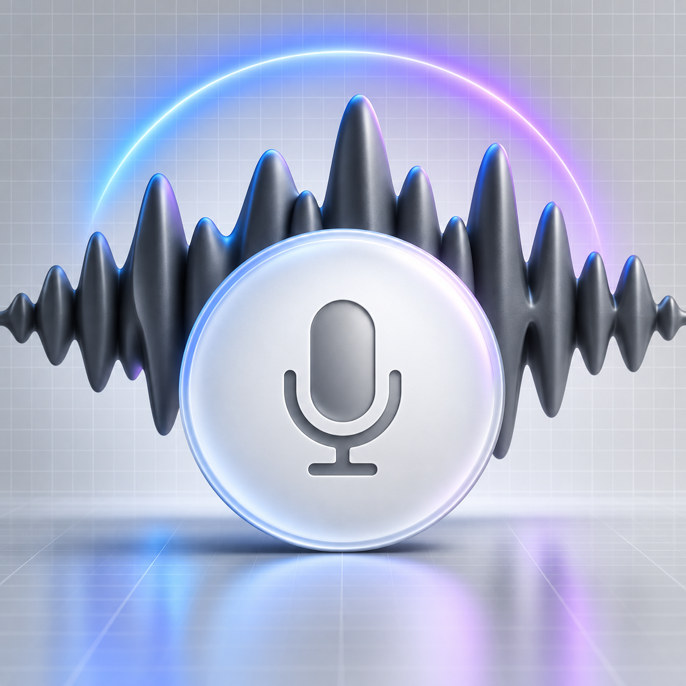
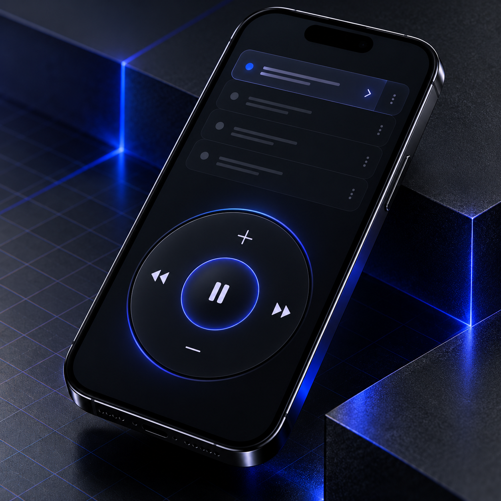
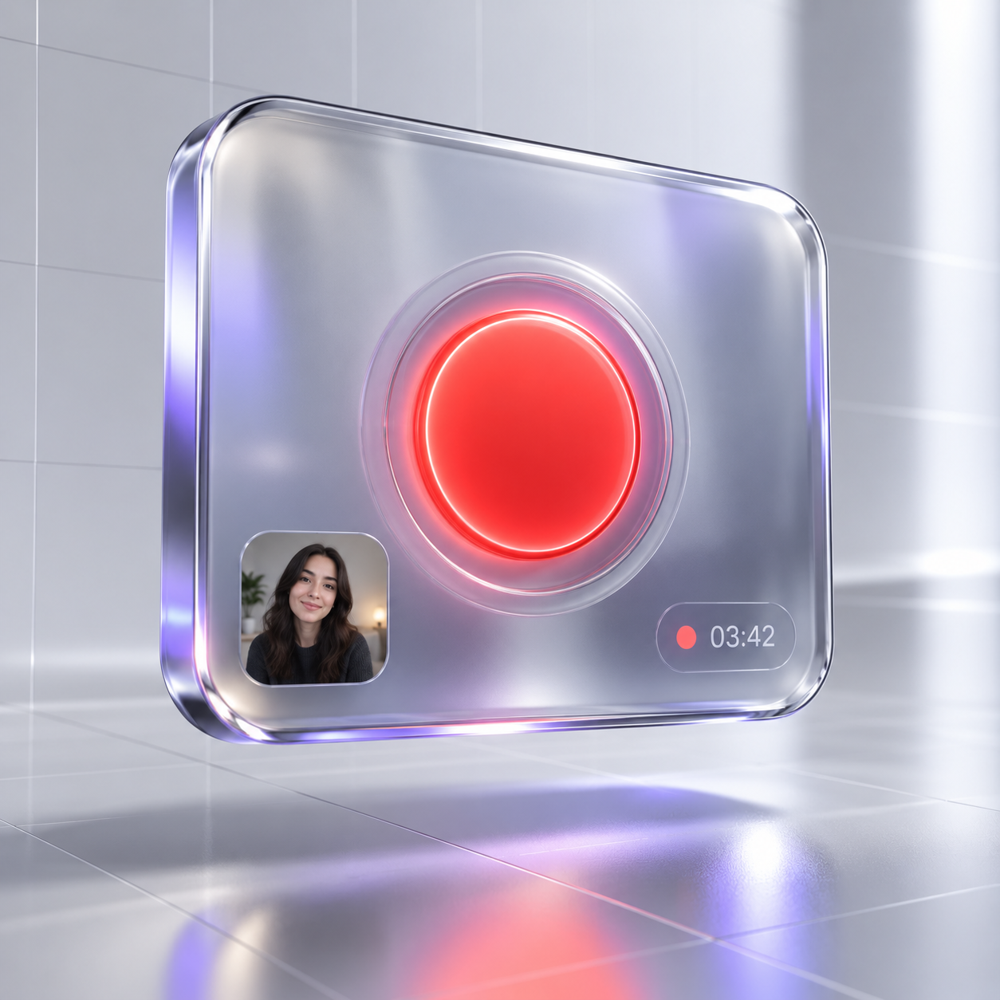
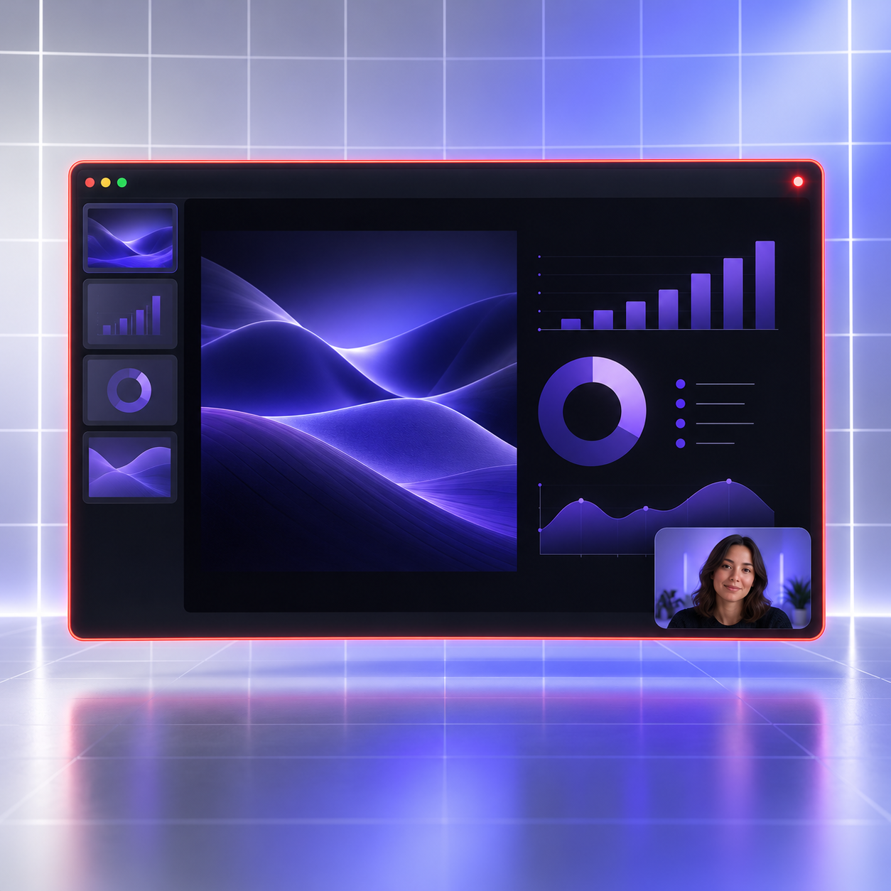
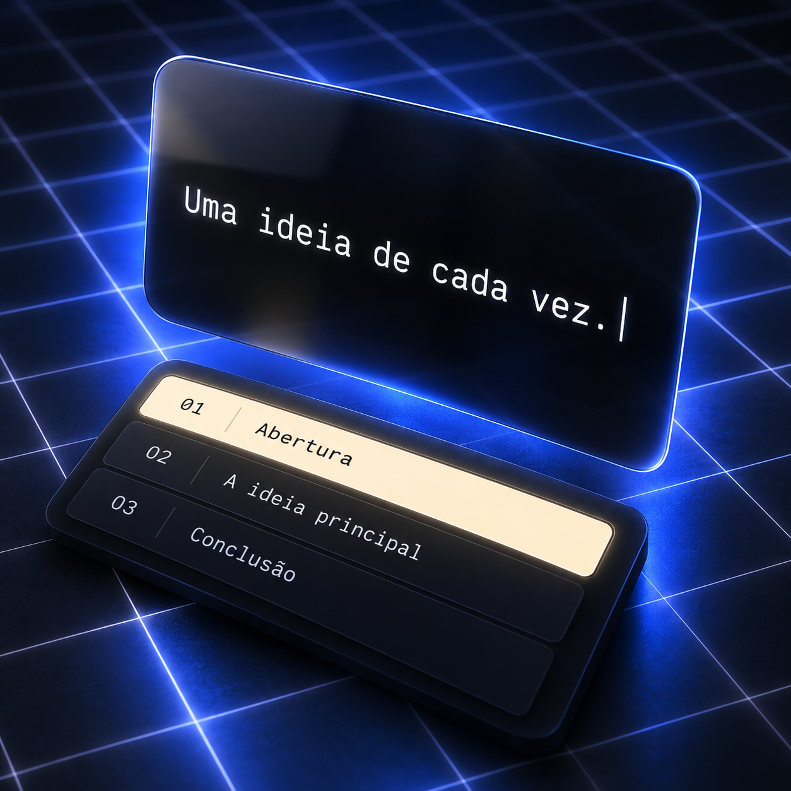
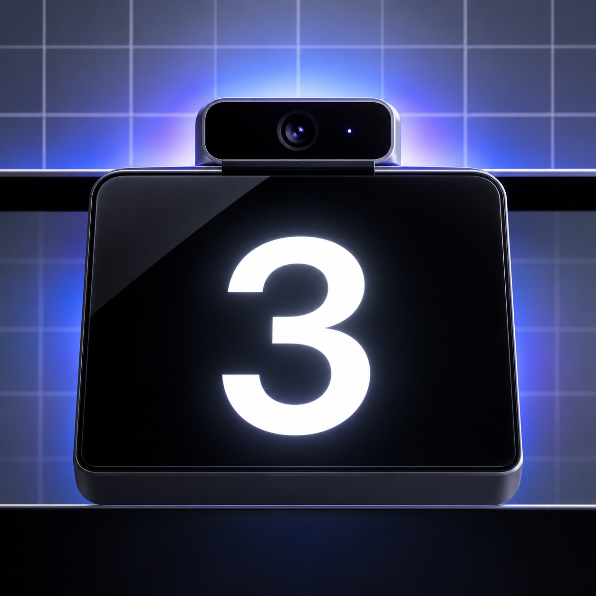

Palavras no sítio certo.
Coloca o teleponto junto à câmara ou numa janela flutuante. Ajusta a posição, a largura, a altura, a cor e o tamanho do texto.
Menos tempo a decorar. Mais espaço para comunicar. O Lume reúne teleponto, guiões e gravação numa aplicação nativa para Mac. As tuas palavras por perto. A tua atenção em quem te ouve.
Descobre as possibilidades ↓Lume 1.0 · macOS 15 ou superior · Intel e Apple Silicon
Escreve, ensaia e grava no mesmo espaço. Com controlos à tua medida e guiões guardados no teu Mac, sem conta nem serviços externos.
Coloca o teleponto junto à câmara ou numa janela flutuante. Ajusta a posição, a largura, a altura, a cor e o tamanho do texto.

Controla a velocidade ou ativa o avanço por som. O texto avança acima do limiar escolhido e faz uma pausa quando o som baixa.

Usa atalhos globais, os controlos da aplicação ou o telemóvel na mesma rede Wi-Fi. Ativa também a pausa ao passar o rato.
Gravações, guiões por secções e uma biblioteca local. Um pequeno estúdio para as tuas grandes ideias.

Grava a câmara em MP4, com microfone opcional e recorte centrado. O vídeo começa primeiro; a leitura só avança quando carregas em Play.

Grava o ecrã principal e o som do sistema. Acrescenta o microfone e a janela da câmara se precisares. O editor e o teleponto são excluídos da gravação do Lume.

Divide o guião com --- numa linha isolada. Cada secção para no fim. Avança pelos botões, atalhos ou comando remoto.
Cria e edita guiões, importa e exporta ficheiros .txt UTF-8. A biblioteca é guardada automaticamente no Mac.

Escolhe uma contagem decrescente de 3, 5 ou 10 segundos, ou começa sem contagem. Prepara-te antes da primeira frase.
Sem conta, analytics ou serviços de IA. O microfone da ativação por som é processado em memória. Os vídeos são guardados no destino que escolheres.
Ilustrações de funcionalidades criadas para o Lume. A interface da aplicação pode diferir.
Carrega em reproduzir e deixa o texto avançar. Podes editar o guião, mudar a velocidade e encontrar o tamanho que te dá mais conforto.
Esta é uma demonstração no navegador. Não requer instalação nem envia o texto para um servidor.
Começa pelas ideias que queres partilhar. Usa frases curtas e palavras que soem a ti.
Na demonstração, ajusta a velocidade e o tamanho do texto. Faz um ensaio sem pressa.
Deixa o guião ser um apoio. Faz pausas, respira e mantém a tua forma de comunicar.
Para criadores de conteúdos, formadores, professores e profissionais que apresentam ideias em vídeo. Para quem quer ter um guião de apoio e dar mais atenção à forma como comunica.
Podes editar o texto da demonstração, iniciar e pausar a leitura automática, ajustar a velocidade, alterar o tamanho das letras e regressar ao início.
Não. O texto existe apenas nesta página enquanto está aberta. Não é enviado para um servidor nem guardado quando atualizas ou fechas a página.
O Lume 1.0 requer macOS 15 Sequoia ou superior. Existem versões separadas para Intel e Apple Silicon. Não há versão Windows neste projeto.
Não. A ativação por voz mede o nível de som do microfone. Não reconhece palavras. Outras vozes e ruído de fundo podem fazer avançar o texto; ajusta o limiar num local silencioso.
O editor e o teleponto são excluídos da gravação feita pelo Lume. Em Zoom, Meet ou Teams, a ocultação depende do capturador e não é garantida. Partilha apenas a janela da apresentação e confirma a pré-visualização.
Ativa o comando no Estúdio e lê o QR com o telemóvel ligado à mesma rede do Mac. Funciona por HTTP local com uma chave temporária, sem cloud. Mantém o endereço privado e desativa o comando quando terminares.
Um projeto com assinatura da Academia crIA e de Patricio Brito. Conhece mais em www.academiacria.pt.
macOS 15 Sequoia ou superior
Versão em validação. Os builds têm assinatura ad hoc e ainda não estão notarizados pela Apple. A gravação real de câmara e áudio requer testes em Intel e Apple Silicon.
Descomprime o ZIP e arrasta Lume.app para Aplicações. O macOS poderá bloquear a abertura por falta de notarização. Depois de tentares abrir, consulta Definições do Sistema → Privacidade e Segurança → Abrir mesmo assim, se a opção estiver disponível.